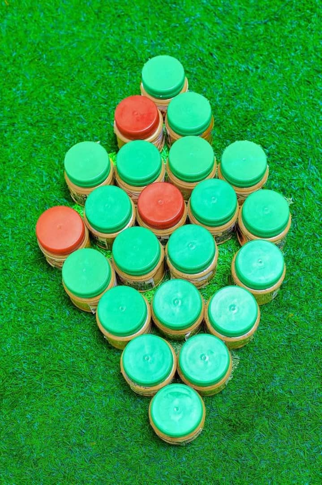
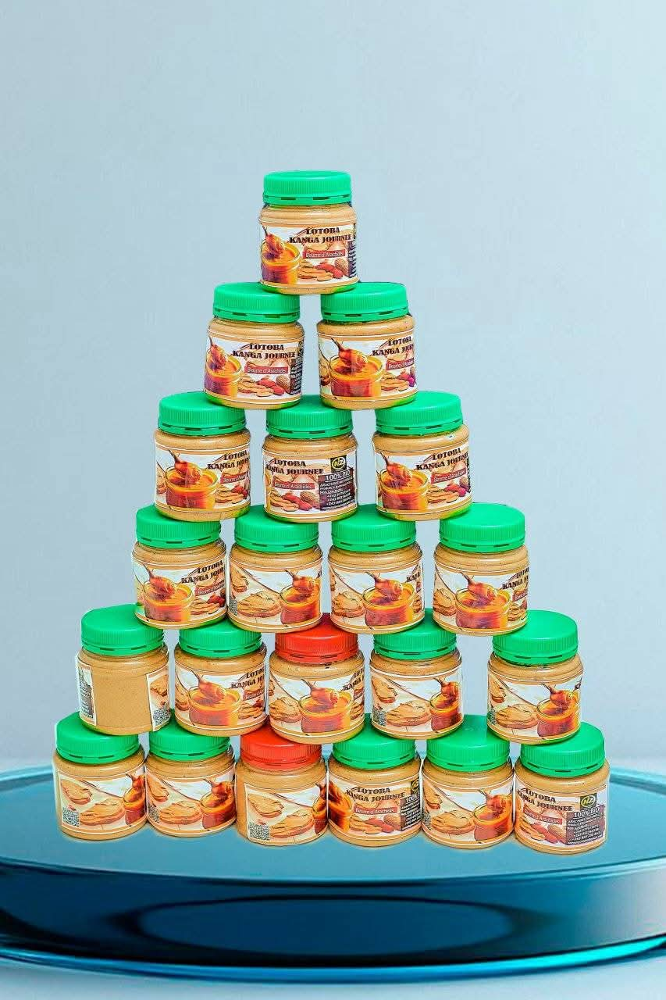
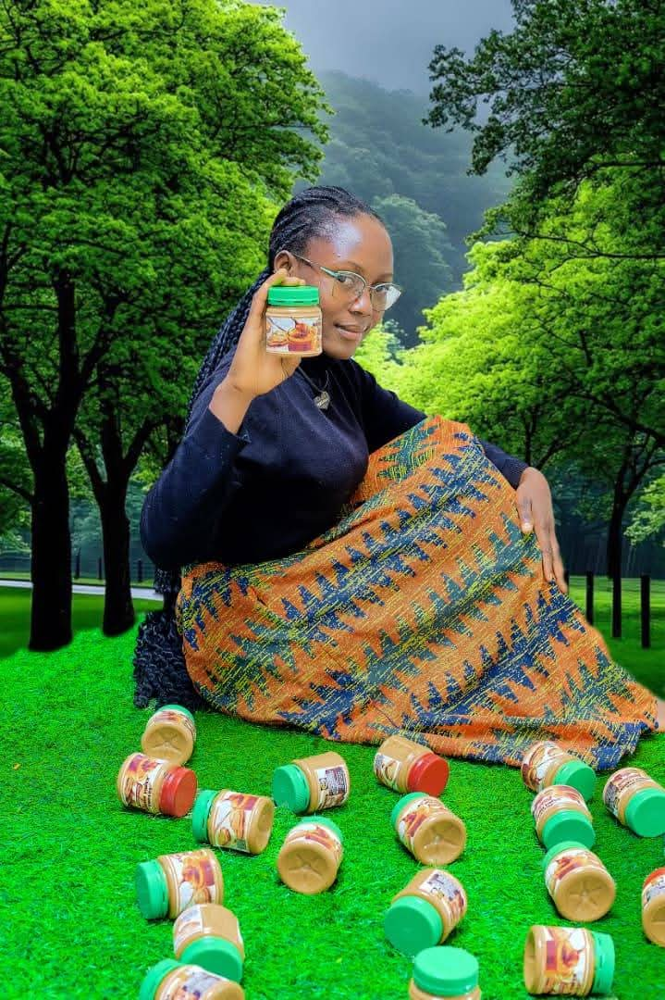

Positionnement
Entreprise locale engagée
Une marque agricole qui présente ses produits avec force et confiance.
Nzenda Business valorise la pâte d'arachide, le caramel d'arachide et les produits agricoles avec une image plus professionnelle, plus claire et plus rassurante pour les clients, revendeurs et partenaires.

Produit phare
Pâte d'arachide présentée avec une image moderne

Présentation claire
Produits valorisés
Relation client rassurante
Image de livraison sérieuse
Aperçu
Une activité qui relie production agricole, transformation et distribution.
Le site doit donner la même impression que l'entreprise : sérieuse, locale, utile et capable de bien présenter ses offres.
Transformation
Pâte d'arachide
Un produit utile au quotidien, prepare avec soin pour la maison et la revente.
Gamme artisanale
Caramel d'arachide
Une offre gourmande qui complete la gamme avec une touche artisanale.
Production locale
Produits agricoles
Une vision plus large de l'entreprise, de la terre jusqu'au client final.
Présentation de marque
Une image plus forte pour mieux vendre, mieux expliquer et mieux convaincre.
Cette refonte met l'accent sur une communication plus nette, des visuels plus affirmés et une meilleure mise en valeur de l'activité.
Découvrir l'entrepriseDes sections mieux structurées pour donner une lecture immédiate.
Des contrastes, des titres et des CTA qui inspirent plus de sérieux.
Une présence visuelle plus forte pour sortir du rendu trop neutre.
Produits en avant
Une première impression plus vendeuse pour les offres principales.

Produit phare
Pâte d'arachide naturelle
Une présentation plus premium pour un produit du quotidien.
Gourmand
Caramel d'arachide

Production
Produits agricoles
Passer à l'action